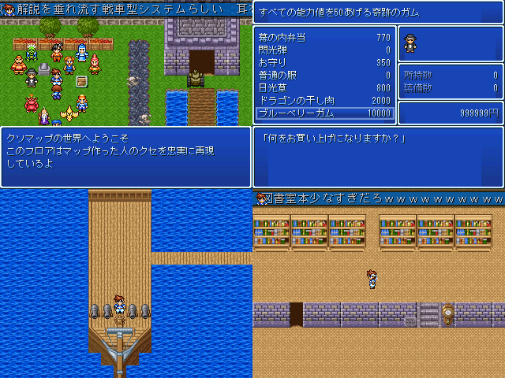

|
|
 |
|
| 作者：フッ化海老廻廊 | |
| ジャンル：よく分からない | |
| ツクール：2003 | |
| 作者コメント： 本来バグるはずの無いクソなのに原因不明で停滞中 でも間に合うだろう多分 （エターなった）過去作品を引っ張ってくるのはすごく精神が抉られました これが答えです ブライアン君が作ったクソマップをアレックス君が自由に歩き回るって、ゲームの体裁のギリギリ 収録MAP数だけはそこそこあります 無論、全部どうしようもない |
|
| 管理人コメント： 解説があるならマップを歩いてるだけでも楽しくなりそう。 |
|
| ダウンロード(1.21MB_05/27更新) / 感想掲示板 |
|
| 前の作品 / 次の作品 / TOPへ戻る | |